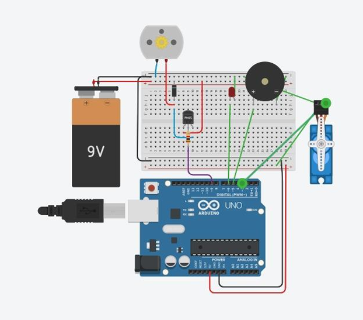

Arquitectura del Sistema
Componentes del Sistema
🔍 Capa de Detección
- Cámara web para captura de video
- MediaPipe Hands para tracking de manos
- Algoritmos de reconocimiento de gestos
💻 Capa de Procesamiento
- Python con OpenCV y Pygame
- Interfaz gráfica en tiempo real
- Comunicación serial con Arduino
⚡ Capa de Control
- Arduino UNO como controlador principal
- Servomotores para movimiento preciso
- Drivers L298N para control de motores
💡 Capa de Actuadores
- LEDs para iluminación
- Ventilador DC con control de velocidad
- Buzzer para alertas audibles
- Servo para mecanismo de puerta
Flujo de Datos
1
Captura de Gestos
La cámara captura los movimientos de la mano en tiempo real
2
Procesamiento en Python
MediaPipe analiza los puntos clave de la mano y detecta gestos
3
Generación de Comandos
Los gestos se mapean a comandos específicos para los dispositivos
4
Comunicación Serial
Python envía los comandos vía USB al Arduino
5
Ejecución en Arduino
El microcontrolador activa los dispositivos correspondientes
6
Retroalimentación Visual
La interfaz muestra el estado actual de todos los dispositivos
Diagrama de Arquitectura del Sistema

Flujo completo de datos y control
Interfaz Gráfica del Sistema

Panel de control en tiempo real desarrollado con Pygame
Esquema del Circuito
Configuración de componentes electrónicos